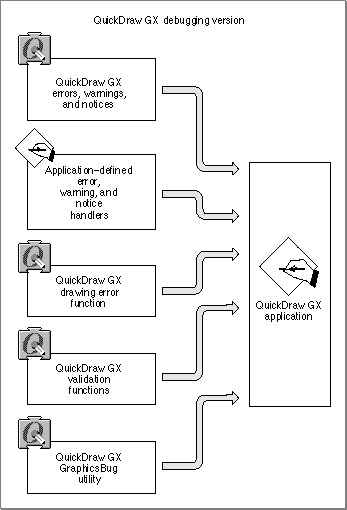

Legacy Document
Important: The information in this document is obsolete and should not be used for new development.
Important: The information in this document is obsolete and should not be used for new development.


About QuickDraw GX Debugging
QuickDraw GX provides both a debugging environment and a non-debugging environment. The non-debugging environment is present whenever you install the non-debugging version of QuickDraw GX. You install the non-debugging version after completely debugging your application. Users of your application will use the non-debugging version of QuickDraw GX.You can develop applications that use QuickDraw GX graphics and typography functions using the QuickDraw GX debugging environment. The debugging environment consists of
Figure 4-1 shows the QuickDraw GX application development environment.
- the QuickDraw GX debugging version
- QuickDraw GX errors, warnings, and notices
- application-defined error, warning, and notice handlers
- a QuickDraw GX drawing error function
- QuickDraw GX validation functions
- the QuickDraw GX GraphicsBug utility
Figure 4-1 The QuickDraw GX debugging environment

As a direct result of the extensive error, warning, and notice checking the debugging environment performs, the debugging version of QuickDraw GX is significantly slower than that of the non-debugging environment. Invoking additional optional error checking using the validation functions further affects performance.
Subtopics
- Debugging Version of QuickDraw GX
- QuickDraw GX Errors, Warnings, and Notices
- Application-Defined Error, Warning, and Notice Handlers
- The Drawing Error Function
- Validation Functions
- MacsBug and GraphicsBug